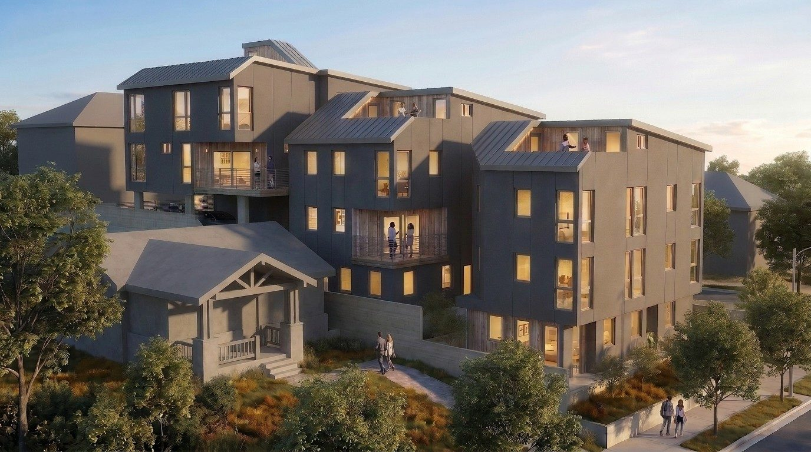

Robinson 3×3


- Location
- Los Angeles, California
- Type
- Small lot subdivision with ADUs and JADUs
- Size
- 3 lots · 9 units
- Status
- Entitled
A missing middle solution for Los Angeles: three small lots, each stacking a house, an ADU and a JADU.
Stacking three homes on each lot brings nine homes to the site, adding density at a scale that still reads as houses on the street. Each home has its own front door, with no shared corridors. Parking sits at the rear off the alley, out of view, so the street frontage goes to landscape and entry steps instead of driveways and garages. The site is planned for residents first and cars second.